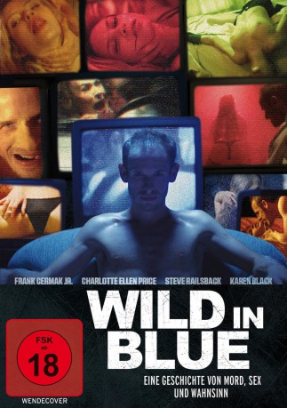
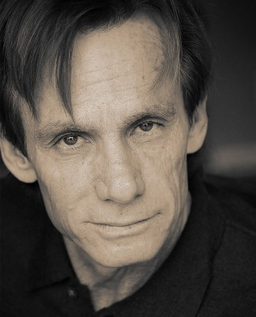
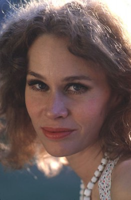

#944 Wild in Blue
 
 IMDB-Wertung: 5.6 / 10
IMDB-Wertung: 5.6 / 10  Metascore: 0
Metascore: 0 
Sein Name ist Charlie - und das ist seine Welt: Ein Ort des Bösen, der Gewalt und der Perversion. Charlie ist Narzisst, Nihilist und ein sexueller Sadist, der unschuldige Frauen verführt und ermordet. Gierig nach Macht und Kontrolle filmt er seine wahnsinnige Geschichte. Eines Tages begegnet ihm die schöne, junge Ashley. Heimlich filmt er sein neues Opfer, verfolgt sie und bricht in ihre Wohnung ein. Aber diesmal ist alles anders. Charlie wird weich, der brutale Jäger empfindet längst verloren geglaubte Gefühle für seine Beute ...
Jahr: 2014
Dauer: 82 Minuten
FSK: 18
Land: USA Studio: Accent Film EntertainmentTonspuren:
Untertitel:
Auflösung: 720p (1280x672) Größe: 2304 MB
Genre: Liebe, Thriller
Regisseur: Matthew Berkowitz
Drehbuch: Matthew Berkowitz
Soundtrack: Ryan Mcguffin
Darsteller:
- Frank Cermak Jr. als Charlie
- Charlotte Ellen Price als Ashley
-  Steve Railsback als Charlie's Father
-  Karen Black als Justine
 Daveigh Chase als Rachel
Daveigh Chase als Rachel- Marcos Mateo Ochoa als Ben
- Owen Teague als Young Charlie
- Azeen Kazemi als Nitro the Stripper
- Andrea Lowell als Hooker #1
- Caroline Mitchell als Hooker #2
- Aidan Luke Friedberg als Baby Charlie
Datei: X:\FSK18-2014\Wild in Blue (2014, FSK, 1280x672).mkv seit 24.04.2015
Festplatte: FSK18
 Es gibt insgesamt 27 Filme in der Gruppe 'FSK18-2014'
Es gibt insgesamt 27 Filme in der Gruppe 'FSK18-2014'